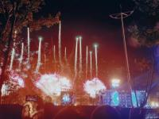
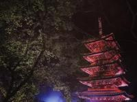
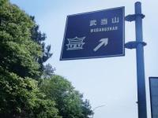

这是来武汉以后看的第一次烟花秀 ，本来是准备和朋友去蔡甸区花博汇看花的，凑巧那天的票包含了烟花演出，人山人海，从 外场走进去花了半个小时，感觉是值得纪念的一次经历，很少那么开心过。

来武汉上大学以来第二次看的樱花，第一次是在武大看的樱花，感觉武大的建筑比较好看一点，樱花倒也没有 那么惊艳，这次是因为和朋友忘了预约武大樱花，就买了东湖樱花园的票，去的晚，刚好赶上了东湖夜樱， 感觉气氛挺不错的，夜场的樱花别有一番风味。

五一人太多，想着就在省内玩玩，所以买了去湖北十堰的车票，特种兵旅游硬座到底 的后果就是累的在酒店睡了两天，第三天早上去的武当山， 离火车站很远，要乘公交车坐一个多小时才能到景区，到了景区以后又要坐景区大巴到南岩， 早上没吃多少饭，加上高温又晕车，真的痛苦！！开始往金顶爬的时候已经到了两点钟，花了4个小时 从南岩爬到景区缆车附近，那会儿已经是下午6点多了，想着来都来了，那就到金顶看个日落吧，结果日落还真的不错， 第一次爬到那么高的地方看日落，还是值得的，爬山累的另一个方面就是人多，一段路能堵好久，经验就是以后节假日必不去爬山。